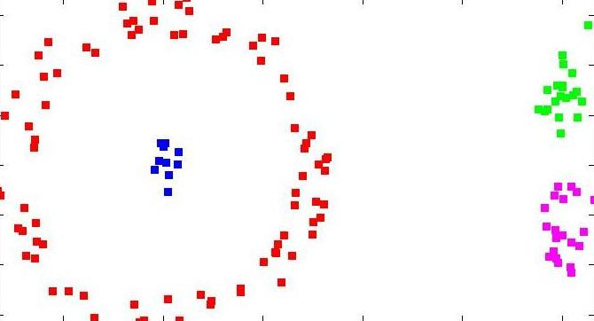
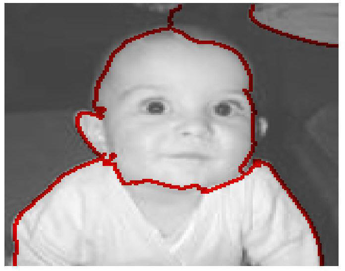
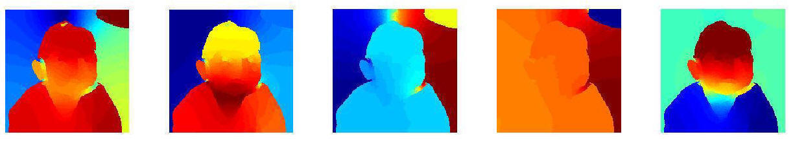

Download
download Ncuts code (ncut_9.zip) new (January 22, 2010): release of all c++ source mex files compatible with matlab R2009b.
This software is made publicly for research use only. It may be modified and redistributed under the terms of the GNU General Public License.
see also linear time multiscale normalized cut image segmentation.
CitationNormalized Cuts and Image Segmentation, Jianbo Shi and Jitendra Malik, IEEE Transactions on Pattern Analysis and Machine Intelligence(PAMI) 2000
Description
|  |
Data Clustering
with Normalized Cuts
Demo step by step Given a weighted graph, W, find a graph partition with Normalized Cuts. |
|   |
Image Segmentation
with Normalized Cuts
Demo
step by stepGiven an input image I, construct a pixel-pixel pair-wise similarity matrix W based on Intervening Contours. Output the image segmentation with Normalized Cuts. |
Installation instructions
Make sure you have Matlab (it was tested under R2009b but should probably work in other versions as well). Certain functions might require the Matlab Image Processing Toolbox.
Synopsis
| demoNcutImage |
script that shows a demo of image segmentation |
|
demoNcutClustering |
script that shows a demo of point cloud clustering |
|
NcutImage |
given image "I", segment it
into "nbSegments" segments |
|
ICgraph |
compute Intervening Contour
based pixel similarity matrix W |
|
ncutW |
Given a similarity graph "W",
computes Ncut clustering on the graph into "nbSegments" groups; |
Release notes
2010, January 22: release version 9: release of all c++ source mex files compatible with matlab R2009b